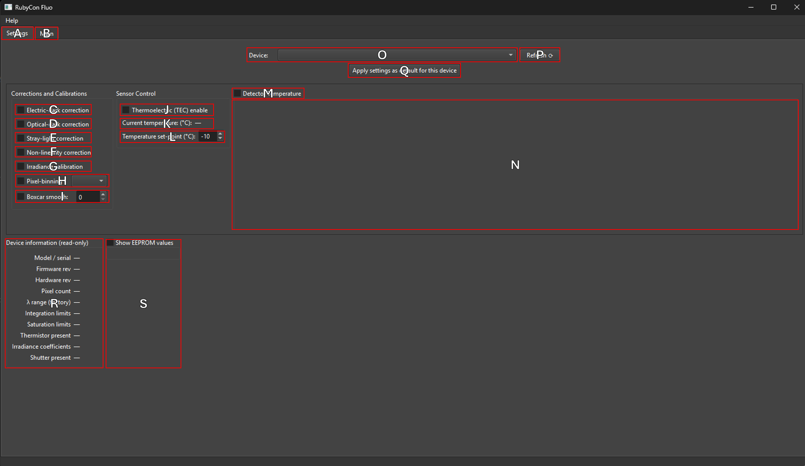

RubyCon_Fluo allows you to collect and fit ruby‐fluorescence spectra from Ocean Optics spectrometers. It supports manual peak selection, pseudo‐Voigt fitting, and an automated two‐peak Voigt model for R1 and R2 lines. Once fitted, you can convert wavelength position of the R1 peak to pressure at a given temperature using various literature calibrations, and save both raw spectra and fit metadata to text files.
1. Introduction
RubyCon_Fluo is designed specifically for Ocean Optics spectrometers. It accesses the low-level python API to collect spectra directly from the spectrometer. It will check which settings are available on your model and allow you to turn on and off settings, including if it has a thermoelectric cooler.
- Uses literature Ruby fluorescence shift calibrations to calculate pressure.
- Allows for subtracting the background, collected with the laser off, from collected spectra.
- Designed for high-speed collection and calibration to speed up experiments.
2. Installation
2.1 System Requirements
RubyCon_Fluo is built for Python 3.13, but it may work with future versions of Python as well. Requirements are intentionally made to be low as it's a lightweight program.
- 2 core CPU
- 4 GB of RAM
- No GPU requirement
2.2 Dependencies
Required Python packages:
- PySide6
- PyQtGraph
- seabreeze
- numpy
- numba
- scipy
2.3 Setup & Configuration
3. Quick Start Guide
3.1 Launching the Application
3.2 Basic Workflow
- Select your Ocean Optics spectrometer from the Devices dropdown.
- Adjust integration time and number of scans, then click “Single” or “Continuous” to acquire spectra.
- Use one of the fitting modes (Manual, Manual‐Voigt, or Auto) to locate R1 peak with your mouse, or automatically in Auto mode.
- Press “Add Measurement” to save the current fit and raw spectrum to the table.
- Optionally enable Auto‐Save to write measurements to text files automatically.
4. User Interface Overview
4.1 Main Window Components
| Key | Explanation |
|---|---|
| A | Settings tab. |
| B | Main tab. |
| C | Reset zoom to full range. |
| D | Switch to box zoom mode. |
| E | Scale intensity to current view once. |
| F | Automatically scale intensity continuously to current view. |
| G | Spectrum view. |
| H | Literature pressure calibrations selection. View source by clicking the question mark. |
| I | Literature temperature calibrations selection. View source by clicking the question mark. |
| J | Enable the reference wavelength and temperature number boxes to modify them. |
| K | Reference wavelength. |
| L | Reference temperature. |
| M | Currently fit R1 wavelength. Cannot edit manually. |
| N | Temperature of sample for current spectrum. Can edit manually. |
| O | Pressure from current wavelength (M) and temperature (N) calculated using currently selected pressure (H) and temperature (I) selection. |
| P | Set integration time for spectrum collection. Click on the unit displayed to switch units from ms to s. |
| Q | Set number of acquisitions, or scans, to average. Can only enter integers. |
| R | Begin continuous acquisition using current integration time & scan number. |
| S | Start a single acquisition using current integration time & scan number. |
| T | Begin an automated process to optimize the integration time. |
| U | Collect a background that will be subtracted from all collected spectra. |
| V | Write name to use for the current spectrum when adding it to the table (Z) below. |
| Key | Explanation |
|---|---|
| W | Add the current spectrum to the table (Z) with the given name (V). |
| X | Remove the currently selected spectrum from the table (Z). |
| Y | Remove all spectra saved to the table. |
| Z | Table to show all added spectra. |
| α | Save the currently selected rows from the table to your computer. |
| β | Save all spectra in the table to your computer. |
| γ | Load a previously saved spectrum from your computer to the table. |
| δ | When checked, saves all spectra added to the table automatically to a folder on your computer. |
| ε | After a spectrum has been collected, this will allow you to manually fit it by placing a vertical line in the center of the R1 peak. |
| ζ | After a spectrum has been collected, this will allow you to manually fit it with a Voigt peak. |
| η | This will clear all fits, of any kind, from the current spectrum. |
| θ | Toggle on and off auto Voigt fitting mode. |
| ι | Set the low end of the auto-fitting range. |
| κ | Set the high end of the auto-fitting range. |
| λ | Set the fitting range using the current wavelength range in the plotting area (G). |
| μ | Zoom the wavelength range in G to the currently set wavelength fitting range in ι and κ. |
| ν | Progress bar of current acquisition. |
| ξ | Progress bar of current number of acquisition scans. |
| ο | Remaining time for current acquisition. Integration time × scan number. |
| π | x,y position of mouse cursor in G. |
| ρ | Calculated pressure of mouse cursor using π and currently selected pressure (H) and temperature (I) calibration. |
4.2 Settings Window Components

| Key | Explanation |
|---|---|
| A | Settings tab. |
| B | Main tab. |
| C | Electric-dark correction toggle. |
| D | Optical-dark correction toggle. |
| E | Stray-light correction toggle. |
| F | Non-linearity correction toggle. |
| G | Irradiance calibration toggle. |
| H | Toggle pixel binning and set number of pixels to bin using dropdown. |
| I | Toggle boxcar smoothing and set number of pixels to use for the smoothing. |
| J | Toggle the thermoelectric cooler on or off. Only works if your spectrometer is equipped with a TEC and power is supplied to the TEC. |
| Key | Explanation |
|---|---|
| K | Current temperature of the detector. |
| L | Set the desired temperature for the detector. |
| M | Toggle the detector temperature plot. |
| N | The detector temperature plot will be shown here if enabled by M |
| O | Select which spectrometer to use if multiple are connected. |
| P | Re-scan your computer if a new spectrometer was connected to populate O. |
| Q | Apply the currently selected settings to the currently selected spectrometer as defaults. |
| R | Automatically polls the spectrometer for all information about itself that it has and displays it here. |
| S | When toggled, it polls and displays below current data stored in the EEPROM of the spectrometer. |
5. Data Acquisition
5.1 Spectrometer Selection
When RubyCon_Fluo first opens, it selects the first spectrometer by default in the Settings tab as long as it's connected to the computer and discoverable. Make sure to close any other software first that accesses the spectrometer. If you have multiple spectrometers, you can select a different one in the dropdown menu.
The settings tab should correctly poll the spectrometer, check which features are present in your model, and gray out any features not present so you can't select it. Once you toggle which corrections & calibrations you want for the chosen spectrometer, click on "Apply settings as default for this device" and it will add the chosen toggle states to spectrometer_defaults.json and remember them, setting the same ones automatically next time you open the program or select that spectrometer.
5.2 Integration Time & Averaging
5.3 Background Collection
6. Fitting Modes
6.1 Manual Peak Selection
6.2 Manual Voigt Mode
6.3 Automatic Two‐Peak Voigt Fit
7. Pressure & Temperature Calibration
7.1 Selecting Calibration Sources
7.2 Combined vs. Separate Calibrations
8. Saving & Exporting Data
8.1 Saving Measurements
8.2 Auto‐Save Feature
9. Settings & Preferences
9.1 Device Defaults
9.2 UI Preferences
10. Troubleshooting & FAQs
11. Appendix
11.1 Text File Format Specification
11.2 Common Error Messages